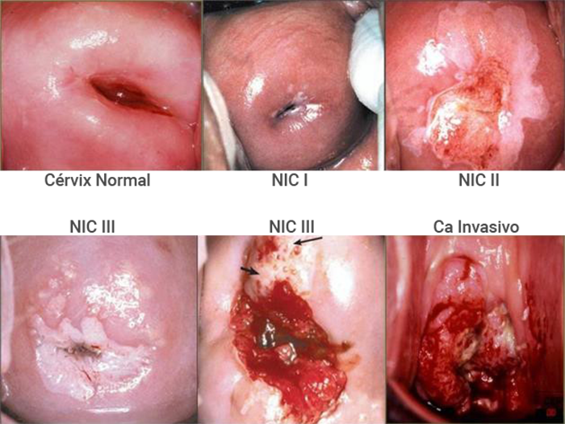
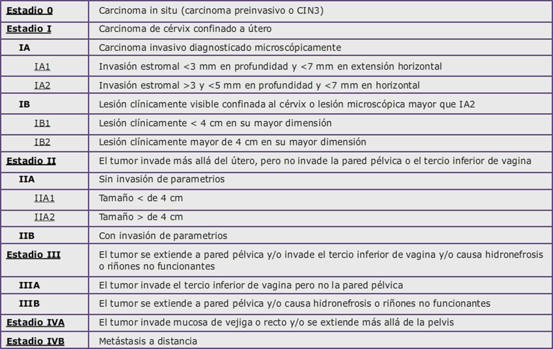

Cáncer de Cérvix

1.6 Diagnóstico
MANIFESTACIONES CLÍNICAS
La implementación del cribado del cáncer de cérvix en los países industrializados y el consecuente diagnóstico temprano de la enfermedad ha determinado que las pacientes diagnosticadas en este ámbito se encuentren con frecuencia asintomáticas. Sin embargo, en los países en vías de desarrollo el estudio diagnóstico suele iniciarse por la aparición de sintomatología secundaria al proceso neoplásico.
El síntoma más frecuente en este contexto es el sangrado vaginal espontáneo o tras el coito, o la presencia de flujo vaginal maloliente. En situaciones más avanzadas de la enfermedad puede aparecer dolor pélvico, dificultad a la micción y cambios en el ritmo deposicional. Como consecuencia de la diseminación linfática y la invasión locorregional podemos observar linfedema en las extremidades inferiores y dolor de características neuropáticas por compromiso de raíces nerviosas.
PRUEBAS DIAGNÓSTICAS Y ESTUDIO DE EXTENSIÓN
1 Exploración física
La exploración cervical puede ser normal en las fases iniciales o bien presentarse como una erosión o úlcera en la zona de transición del cuello cervical que sangra fácilmente al roce, como una lesión sobreelevada polipoide, o en estadios avanzados, como un cuello cervical indurado y fijo (siguiente figura).
Tras el examen visual hemos de completar nuestra valoración con una exploración digital incluyendo un examen rectovaginal para definir el compromiso de las estructuras adyacentes (parametrios, tabique rectovaginal) y un examen físico, con especial atención a los territorios ganglionares inguinales y supraclaviculares.
Posibles hallazgos patológicos en la exploración física del cuello uterino
2 Biopsia
Todas las lesiones sospechosas han de ser biopsiadas. Se debe evitar biopsiar el área central de la lesión por el riesgo de obtener sólo tejido necrótico.
Las pacientes con citologías patológicas o síntomas sin evidencia de lesión macroscópica deben evaluarse con una colposcopia para la realización de biopsias dirigidas. La conización estará indicada, con intención diagnóstica, para la valoración de lesiones endocervicales ocultas, en aquellos casos en los que exista una discrepancia entre los hallazgos citológicos, patológicos y por colposcopia.
3 Determinaciones analíticas
En casos localmente avanzados, el análisis de sangre nos permitirá valorar la posible existencia de anemia (frecuente en esta enfermedad), así como la posible repercusión del proceso neoplásico en la función renal (por posible obstrucción ureteral).
En el momento actual no existe ningún marcador tumoral que haya demostrado su utilidad en el manejo de esta neoplasia. Existen datos publicados con el antígeno SCC (squamous cell carcinoma) que muestran una relación entre su valor en sangre y el estadio patológico, pero su utilización no está recomendada en las diversas guías clínicas. Otros marcadores tumorales que pueden verse elevados ocasionalmente son el CEA y CA 125.
4 Exploraciones radiológicas
Tanto la International Federation of Gynecology and Obstetrics (FIGO) como el American Joint Committee on Cancer (AJCC) establecieron los dos sistemas de estadificación que existen en esta neoplasia sobre la base de criterios clínicos. Las exploraciones contempladas por la FIGO para la estadificación del cáncer de cérvix son: palpación, inspección, colposcopia, curetaje endocervical, histeroscopia, cistoscopia, rectoscopia, urografía endovenosa, radiología pulmonar y ósea. Según la FIGO, la realización de estas pruebas radiológicas se recomendaría sólo en caso de sospecha clínica.
Los hallazgos de otras exploraciones radiológicas adicionales aportan información muy útil para la planificación terapéutica, pero no determinan un cambio en el estadio clínico. La TC y la RM han sido las dos exploraciones más utilizadas en la valoración del tumor primario. Varios estudios, incluido un meta-análisis, han demostrado una mayor sensibilidad y una mayor precisión de la RM frente a la TC en la valoración de la localización tumoral, el tamaño, la afectación parametrial y vaginal, y el compromiso de estructuras adyacentes como el recto y la vejiga urinaria.
La valoración de la afectación ganglionar pélvica y paraaórtica por ambas técnicas es limitada, presentando una baja sensibilidad en presencia de ganglios inferiores al centímetro. En esta situación, son varios los estudios que muestran la PET-TC como una técnica superior, principalmente en la valoración de los territorios ganglionares paraaórticos, con una alta sensibilidad, especificidad y valor predictivo negativo.
Importante: En muchos hospitales de países desarrollados, en la actualidad la RM pélvica y el PET-TC se realizan sistemáticamente como estudio de extensión del cáncer de cérvix localmente avanzado, pero no puede generalizarse su recomendación ya que son pruebas no fácilmente accesibles en otros países.
5 Estadificación gaglionar
En la actualidad, para planificar adecuadamente el tratamiento del cáncer de cérvix se ha de realizar una evaluación del status ganglionar pélvico +/- paraaórtico.
En los tumores localizados susceptibles de tratamiento quirúrgico es preciso realizar una estadificación ganglionar de la pelvis, mediante biospia selectiva de ganglio centinela (BSGC) o linfadenectomía pélvica, y sólo en caso de que exista afectación ganglionar pélvica, habría que proceder con la estadificación paraórtica.
En los tumores localmente avanzados en los que se va a realizar un tratamiento con radio- quimioterapia radical es preciso completar la estadificación con una evaluación ganglionar, para poder planificar adecudamente los campos de irradiación. La linfadenectomía paraaórtica sigue siendo el gold standard para la evaluación ganglionar de estas pacientes. Su realización vía laparoscópica y preferiblemente retroperitoneal permite disminuir la morbilidad asociada a esta exploración.
Recientemente se han publicado diversos estudios que muestran un adecuado valor predictivo de la PET-TC en la detección de metástasis ganglionares retroperitoneales, lo que quizás podría en un futuro evitar la linfadenectomía de estadificación, al menos en aquellos casos con PET-TC negativo.
SISTEMAS DE ESTADIFICACIÓN
Como ya se ha comentado, existen dos sistemas de estadificación, el de la FIGO y el del AJCC (más conocido como TNM), basados en criterios exclusivamente clínicos, aunque el más ampliamente utilizado es el de la FIGO (siguiente tabla). En la clasificación FIGO no se contempla la posible afectación ganglionar. Según la clasificación TNM la afectación ganglionar regional es considerada estadio IIIB.
El objetivo de la clasificación FIGO es permitir la comparación entre las diferentes series procedentes de países en vías de desarrollo y de los países desarrollados, y por ese motivo no introduce técnicas de evaluación que puedan no estar accesibles para las pacientes de todos los países. Los hallazgos de otras pruebas radiológicas (RM, TC, PET-TC) no modificarían la estadificación clínica de la FIGO.
Estadificación del cáncer de cérvix (clasificación de la FIGO)
Algunas observaciones:
En aquellos casos en los que exista dudas sobre el estadio debemos considerar el estadio inferior. La extensión al cuerpo uterino no cambia el estadio.
Todas las lesiones macroscópicas, independientemente de su tamaño, deben ser consideradas como mínimo estadio IB.
Todas las causas de hidronefrosis o riñón no funcionante determinan un estadio IIIB, salvo si se conoce que tienen otra etiología.
El estadio IVA requiere confirmación histológica de la afectación vesical y/o rectal. La presencia de edema bulloso no es suficiente para su diagnóstico.
La afectación ganglionar regional considerada como N1 (y por tanto estadio IIIB) por la clasificación TNM incluye los ganglios parametriales, obturadores, iliacos internos, iliacos externos, iliacos comunes, sacros y presacros. La afectación ganglionar paraaórtica ya correspondería a un estadio IVB, aunque es importante diferenciarla del resto de enfermedad metastásica porque tiene indicación de tratamiento radical.
Aquellos casos en los que se proceda a una intervención quirúrgica del tumor, los hallazgos patológicos no modificarán el estadio clínico y deberán ser reportados como pTNM.